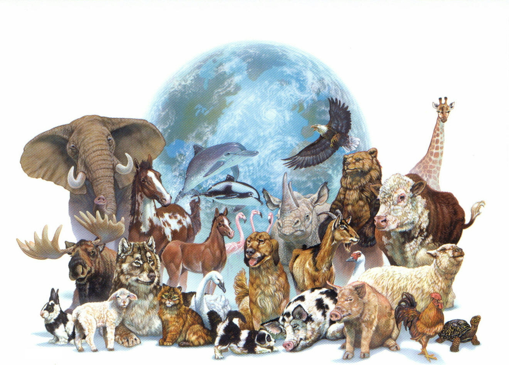

|  | ජීවීන් වර්ගීකරණය හා නාමකරණය |
|
ජීවීන් වර්ගීකරණය හා නාමකරණය පිළිබඳ විස්තරාත්මක ඉදිරිපත් කිරීමක් ලෙස මෙම වැඩසටහන දැක්විය හැක. අධ්යාපන පොදු සහතික පත්ර (සාමාන්ය පෙළ) විෂය කරණුවලට අදාළව ඡායාරූප සහ තවත් බොහෝ තොරතුරුවල එකතුවකින් වැඩසටහන සමන්විතයි. මෙහි ඇතුළත් දත්ත සහ අනෙකුත් තොරතුරු නිවැරදි ව දර්ශණය වීම සඳහා අවශ්ය කරන මෘදුකාංග පිළිබඳ විස්තර සඳහා උපදෙස් පිටුවට පිවිසෙන්න. | ||